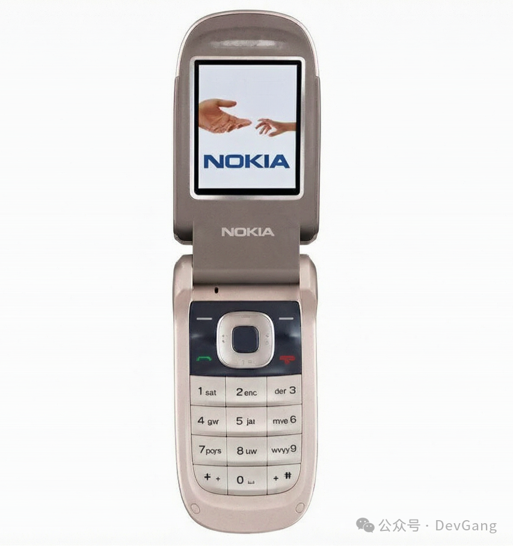
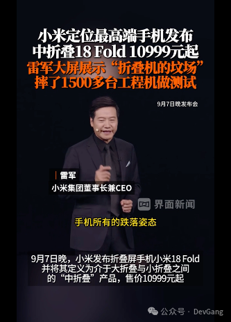

本书作者：测试开发刚哥，文章版权归个人所有，未经授权请勿转载。

时间来到 2026 年夏天，一轮又一轮的手机涨价新闻出现，“华为新款三折叠 19999 元非常有诚意”，“折叠屏 iPhone Ultra 的预计标价达到 20559 元”，“小米 18 Fold 折叠屏起售价 10999 元”。我不是以前的我，手机也不是以前的手机了。

2013 年 7 月 31 日，随着一句“为发烧而生”，红米带着性价比横空出世。这也是我的第一台触屏手机。拆开外包装，拿到手上，打开屏幕的那一刻，我现在还记得，我终于有了一台真正的手机，我内心澎湃地感叹着。手机上的文字看着特别的细腻。我给这台手机换了 3 次手机壳，一直坚持用到了毕业。
手机市场最疯狂的时代是 2015 年到 2017 年，我在这 3 年换了 4 部手机，HTC、联想 ZUK、小米 6、小米 Note3，最快的是半年就换。手机越来越漂亮，可是人却越来越不懂得珍惜。
那段时间经常刷中关村在线、IT 之家，了解新机的特点，追各种评测。我同学也必看小米发布会，我也是从他那知道，对着小米音响喊一声雷军，它会自动播放 are you ok。
那是在江苏常州出差的下午，天下着暴雨，京东快递小哥电话说你的手机到了。我满怀激动地打开了用工资买的第一台手机 HTC。我当时的购机需求是外放音质，低音炮特别带感，金属拉丝后盖也有质感。联想 ZUK 是小巧旗舰用起来很顺手，小米 6 没用坏是摔坏了。小米 Note3 雷军没有耍猴，我第一时间在小米之家拿到了首发现货。这台手机的手感是我用过的手感最舒服的，温润如玉。
2021 年，从小米 Note3 换到了小米 11。用了 5 年，也让我再也不想买小米任何产品。
刚开始买小米的时候，我还自嘲说自己要成为米粉了。毕竟有红米 1 代情节，加上小米 Note3 的体验加持，我对小米的感官是特别好的。还买了小米电视、小米机顶盒、小米充电宝等一系列小米产品。
我升级了一次系统之后，WIFI 用不了，找到小米之家售后。“你的手机是哪个型号”，“小米 11”，店员二话不说，给我免费换了主板。不怎么关注手机新闻的我，那时才知道小米 11 烧主板的事情。我问那个店员你的手机看着挺不错啊，是哪个系列的，他微微一笑，“苹果”。
回顾用过的小米产品，确实性价比挺高，但是质量也并没有那么好。当初 1999 把价格打下来的“土匪”，现在也摇身一变成为了高不可攀的“贵族”。
2026 年，小米 11 的摄像头聚不起焦了，每次拍照都要甩两下。之前在酒店让前台写评价拍照，我让他甩两下，他开玩笑的说，这么高级。
我已经很久没关注手机的新闻，最近买手机发现价格已经变得离谱。一个手机的价格都够买一台笔记本电脑了。手机的那些乱七八糟的功能很多也用不上。
华为手机要 6000+，苹果手机要 8000+，新一代更是要突破万元。现在的手机，已经贵得难以下手。老婆追求拍照买了 Vivo，我顺理成章地继承了她原来的那台 iPhone，换个手机壳，还能继续用 3 年。
一年又一年，十六年啦。是手机已经买不起了？还是我已经不想买那么贵的手机？